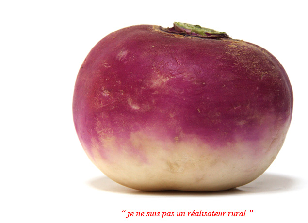

Réalisateur de documentaires et de films d’entreprise
Photographe pendant treize ans, réalisateur depuis 1995. Des films tournés au plus près des gens, de la ferme d’Yvette au cabinet d’un médecin de campagne.

Photographe pendant treize ans, réalisateur depuis 1995. Des films tournés au plus près des gens, de la ferme d’Yvette au cabinet d’un médecin de campagne.